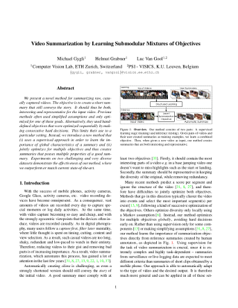

|  |
Authors Michael Gygli, Helmut Grabner and Luc Van GoolAbstract We present a novel method for summarizing raw, casually captured videos. The objective is to create a short summary that still conveys the story. It should thus be both, interesting and representative for the input video. Previous methods often used simplified assumptions and only optimized for one of these goals. Alternatively, they used hand-defined objectives that were optimized sequentially by making consecutive hard decisions. This limits their use to a particular setting. Instead, we introduce a new method that (i) uses a supervised approach in order to learn the importance of global characteristics of a summary and (ii) jointly optimizes for multiple objectives and thus creates summaries that posses multiple properties of a good summary. Experiments on two challenging and very diverse datasets demonstrate the effectiveness of our method, where we outperform or match current state-of-the-art. |
We provide python code for submodular maximization and structured learning.